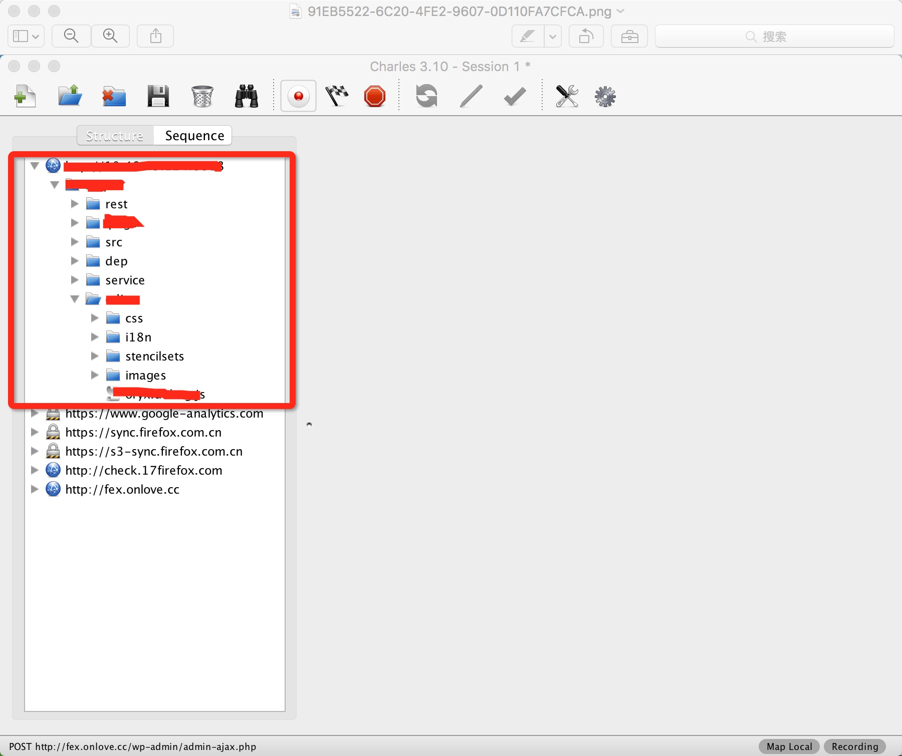
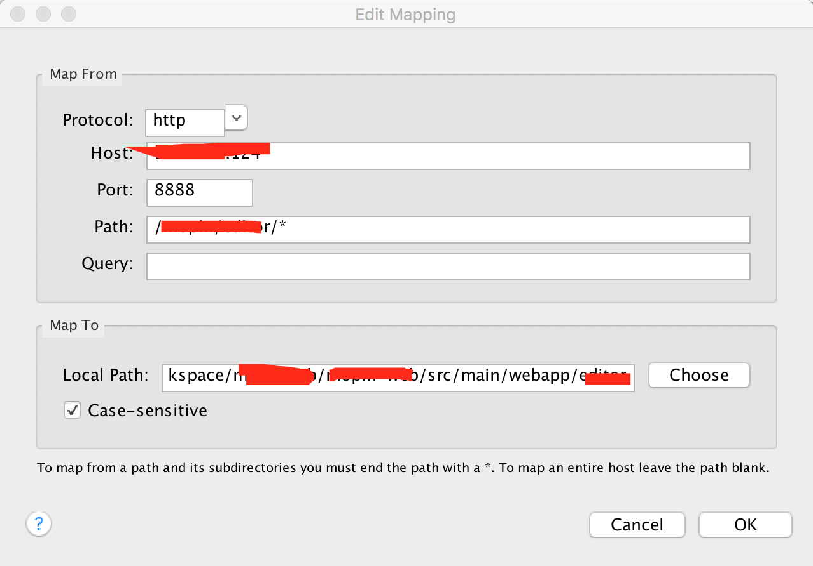
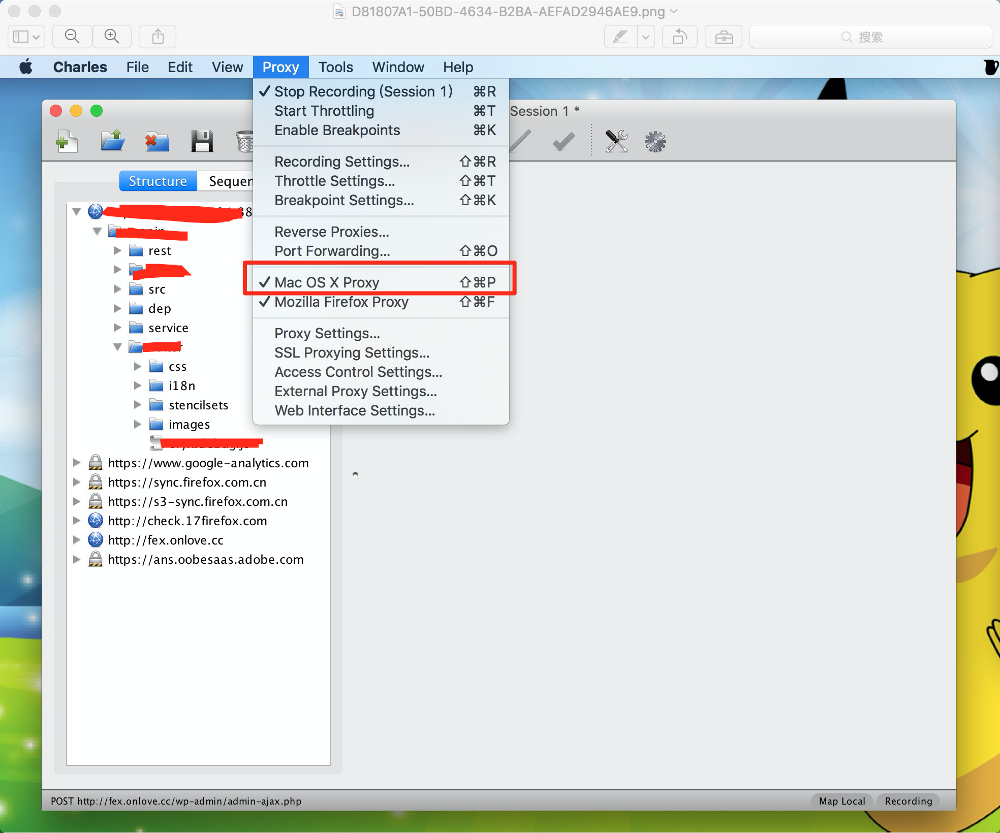

charles代理不了
由于项目需求，会用到代理转发到本地代码，在这一过程中遇到很多坑，而且做一次很久后又会遇到，还会遗忘。所以写一篇文章记录下，方便以后查找；
先上图：  出现的问题：
1.代理始终转发不到本地；
2.还未发现，出现问题我再补充
解决步骤：
1,清除浏览器缓存；
2，将下图红色部分勾选上
 3、确定步骤1，2都做好后，选择代理转发到本地的目录
3、确定步骤1，2都做好后，选择代理转发到本地的目录

最后刷新浏览器查看，代理成功，是不是很棒！！！
不要高兴得太早，有时候由于RD开发机的IP地址换了，又或者某种原因无论如何总是代理不成功。重复 了上万遍上述过程还是不成功。其实有个地方没太注意。  这个地方点击进去，出现不成功的可呢过是由于里面有相同的ip代理到了本地不同的地方，刚好成功那个是以前的而不是现在需要的。我这里已经清除了，演示不了了，大家自己去试。
解决方案，把这个冲突的清除即可，如果是在不知道哪个是多余的，就全部清除吧~~

微信打賞

支付寶打賞